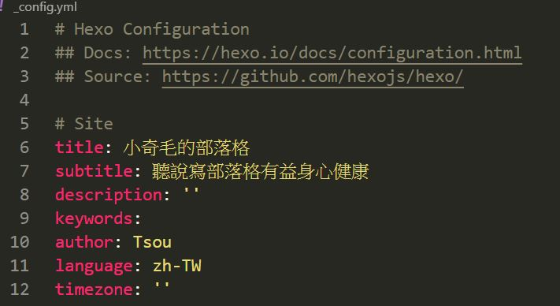
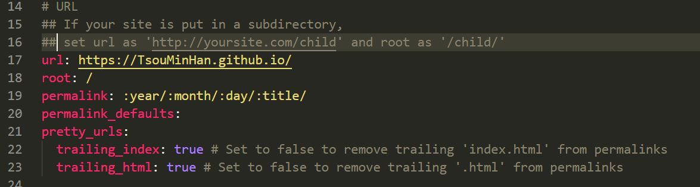
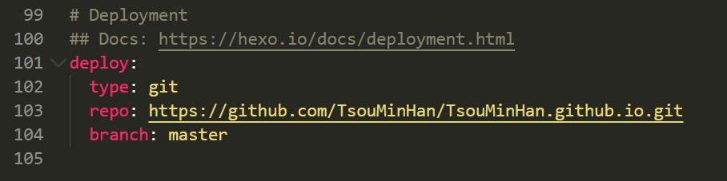

在看了些文章之後決定寫個部落格來玩玩看，有很多個平台可以選擇，參考許多文章後最後我是選擇github page+ Hexo，畢竟免費而且方便管理和部屬。
辦github pages
安裝 Hexo 環境
安裝需求(Windows)：
安裝hxxo
打開terminal，輸入指令安裝hexo：
1 | npm install -g hexo-cli |
裝好之後初始化部落格：
1 | hexo init <folder> //初始化資料夾，取你要的名字 |
修改網站配置
打開_config.yml修改以下內容
1 | title 網站標題 |

1 | url: https://<username>.github.io/ |

1 | deploy: |

這邊的repo和branch要自己添加，因為hexo可以部屬在不同的平台
部屬到github
1 | hexo cl //清除之前建立的靜態檔案，也可以輸入 hexo clean |
輸入hexo d會要求登入github
最後打開自己的網頁就可以看到結果了
更改主題
這個主題Next我真的覺得很漂亮，很喜歡
打開terminal
1 | git clone https://github.com/theme-next/hexo-theme-next themes/next |
接著打開_config.yml，theme改成next就可以了，記得要在重新佈署一次唷
我記得是因為靜態檔案的關係，建議使用Ctrl+F5更新頁面，不同瀏覽器似乎有不同的方式，若有問題的話建議查一下
1 | theme: next |
參考來源
https://ed521.github.io/2019/07/hexo-install/
https://medium.com/@bebebobohaha/%E4%BD%BF%E7%94%A8-hexo-gitpage-%E6%90%AD%E5%BB%BA%E5%80%8B%E4%BA%BA-blog-5c6ed52f23db